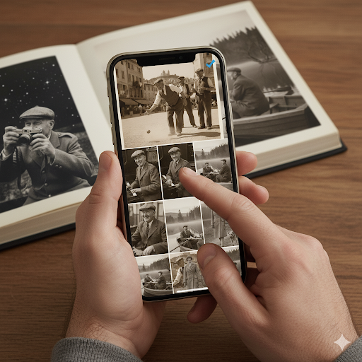

QR Code Mémorial au Cimetière : Guide Complet d'Installation
Le QR Code mémorial (5x5 cm) permet d'accéder à une page hommage personnalisée depuis la sépulture. Installation discrète, durable et respectueuse des lieux. Résiste aux intempéries pendant au moins 10 ans.


⚠️ Avant d'installer : Dans 95% des cas, aucune autorisation n'est requise car le QR code est considéré comme un élément décoratif discret. Pour les cimetières classés ou historiques, vérifiez auprès de la mairie ou de la conservation des monuments historiques.
Pourquoi un QR Code au Cimetière ?
📖 Mémoire Vivante
Une épitaphe est limitée à quelques mots. Le QR code donne accès à 50 photos et vidéos, une biographie complète, des citations et des messages de la famille.
🌍 Accessible Partout
Les proches éloignés peuvent se recueillir virtuellement depuis n'importe où dans le monde. Idéal pour les familles dispersées géographiquement.
💚 Discrétion Absolue
Format compact 5x5 cm, sobre et élégant. S'intègre harmonieusement sans dénaturer l'esthétique de la pierre tombale ou du monument.
🛡️ Ultra-Résistant
Conçu spécifiquement pour l'extérieur : résiste à la pluie, neige, gel (-20°C), chaleur (+60°C), UV et pollution. Garantie 10 ans (2x5 ans).
Guide d'Installation Étape par Étape
- Choisir l'Emplacement Optimal
Sélectionnez une surface plane, lisse et visible sur la pierre tombale. Évitez les zones avec gravures, ornements ou joints. Hauteur idéale : 1,20m-1,50m pour un scan facile. Privilégiez une zone protégée de l'eau stagnante. - Nettoyer la Surface
Essuyez la zone avec un chiffon sec pour enlever poussière, terre et débris. Pour un résultat optimal, utilisez de l'alcool isopropylique pour dégraisser. Laissez sécher complètement (surface parfaitement sèche et propre). - Vérifier la Température
Installez le QR par temps sec, température entre 10°C et 30°C. Évitez les jours de pluie, gel ou forte chaleur. L'adhésif fonctionne mieux dans des conditions tempérées. - Positionner le Médaillon
Retirez délicatement le film protecteur de l'adhésif. Présentez le QR code à l'endroit choisi sans le coller. Vérifiez qu'il est bien droit et visible. Une fois satisfait du positionnement, appliquez-le fermement. - Appliquer et Presser
Collez le médaillon et appuyez fermement pendant 30 secondes sur toute la surface. Assurez-vous qu'il n'y a pas de bulles d'air. Appuyez particulièrement sur les bords pour une adhérence optimale. - Laisser Sécher
Ne touchez pas le QR code pendant 1 heure minimum. Évitez l'exposition à l'eau ou à la pluie pendant les 24 premières heures pour une adhésion maximale. L'adhésif atteint sa force maximale après 72h. - Tester le Scan
Après 1 heure, testez le scan avec votre smartphone. Ouvrez l'appareil photo et pointez vers le QR code. Un lien doit apparaître instantanément. Vérifiez que la page mémorial s'affiche correctement.
Règles de Discrétion et Respect
✓ Format Adapté
Le médaillon 5x5 cm est conçu pour être discret. Couleur neutre qui s'intègre naturellement. Ne défigure pas la pierre tombale.
✓ Emplacement Réfléchi
Ne masquez jamais une inscription, une date ou un ornement. Respectez la symétrie de la stèle. Privilégiez les côtés ou le bas de la pierre.
✓ Respect des Lieux
Le cimetière est un lieu de recueillement. L'installation doit être sobre et digne. Le QR code est un hommage, pas une publicité.
✓ Vérification Préalable
Pour les monuments historiques ou cimetières classés, consultez la mairie. Respectez le règlement intérieur du cimetière si existant.
Entretien et Durabilité
- Nettoyage : Essuyez délicatement avec un chiffon doux humide si besoin. N'utilisez pas de produits abrasifs, javel ou dissolvants.
- Lisibilité : Le QR code reste lisible même avec une légère usure. Testez le scan régulièrement lors de vos visites.
- Résistance : Conçu pour résister 5 ans minimum par QR. Dans la pratique, durée de vie estimée : 7-10 ans par QR.
- Remplacement : 2 QR codes fournis dans le pack. Si le premier s'use (rare), installez le second identique. Garantie totale : 10 ans.
- Support : En cas de problème, contactez notre support français : contact.souvenirqr@gmail.com
Compatibilité des Matériaux
✓ Marbre
Surface lisse idéale. Excellente adhérence. Nécessite un nettoyage préalable minutieux.
Surface lisse idéale. Excellente adhérence. Nécessite un nettoyage préalable minutieux.
✓ Granit
Matériau très courant. Adhésion parfaite si surface polie. Le plus durable pour l'extérieur.
Matériau très courant. Adhésion parfaite si surface polie. Le plus durable pour l'extérieur.
✓ Pierre Naturelle
Fonctionne sur pierre lisse et non poreuse. Évitez les zones friables ou rugueuses.
Fonctionne sur pierre lisse et non poreuse. Évitez les zones friables ou rugueuses.
✓ Métal
Plaques métalliques compatibles. Dégraissez bien avant pose. Évitez le métal oxydé.
Plaques métalliques compatibles. Dégraissez bien avant pose. Évitez le métal oxydé.
⚠️ Pierre Poreuse
Adhérence limitée sur calcaire très poreux ou grès rugueux. Préférez une zone lisse.
Adhérence limitée sur calcaire très poreux ou grès rugueux. Préférez une zone lisse.
✗ Bois
Non recommandé. Le bois travaille avec l'humidité. Adhérence non garantie sur bois brut.
Non recommandé. Le bois travaille avec l'humidité. Adhérence non garantie sur bois brut.
Prêt à Créer Votre Mémorial ?
Commencez dès maintenant et installez votre QR code mémorial au cimetière en toute sérénité.
Cliquer ici pour créer votre mémorial en ligne gratuitement2 QR codes 5x5 cm · Livraison offerte · Garantie 10 ans · Installation en 2 minutes